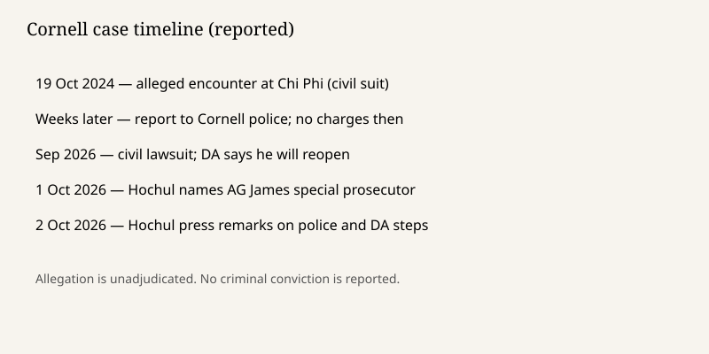

New York · criminal investigation · 1–2 October 2026
Governor Hochul assigned Attorney General Letitia James to the Cornell fraternity investigation

What is agreed across desks
Governor Kathy Hochul assigned New York Attorney General Letitia James to act as special prosecutor in the investigation of a woman’s allegation that she was raped at the Chi Phi fraternity house near Cornell University. The New York Times places the appointment announcement on Thursday night, 1 October 2026. The BBC and CNN carried it into Friday. James may investigate and, if she finds offenses, prosecute and take evidence to a grand jury. Tompkins County District Attorney Matthew Van Houten is no longer in charge of the matter. CNN reports that he welcomed the move.
The underlying allegation, set out in a civil lawsuit filed in September, is that on 19 October 2024 a woman then a 20-year-old sophomore was given alcohol and drugs and raped by several men at the house. She reported the incident to Cornell University police weeks later. No criminal charges were filed at the time. After the lawsuit, Van Houten said his office would reopen the investigation. Hochul then superseded that plan. She said new information had raised serious questions and that she had lost faith in the district attorney’s ability to oversee the case fairly. James said the case would be investigated “fully and fairly” and that she was ready to lead a process “guided by the facts and the law.”
What is only a quote
Hochul’s Friday question — “In what world would the police learn from a victim that she’d been literally gang raped … and not elevate those allegations to the district attorney?” — is an argument about procedure. It treats the civil allegation as the content of a police report. It is not a jury finding that five men committed rape. The BBC keeps the word “alleged” in the headline path and in the body. CNN’s headline pairs the appointment with “national outrage,” which is a mood claim, not a count of people.
Van Houten has said, in the BBC account, that his office was not given enough evidence to meet the charging threshold. He did not immediately answer the Times. A defender of a closed case and a governor removing that case are both interested speakers. Neither statement is the investigative file.
Mechanism and history a reader needs
In New York, a special prosecutor appointed by the governor can take a local criminal matter out of an elected district attorney’s hands. The legal effect is institutional: subpoena power, grand-jury access, and charging authority move. It does not create a presumption of guilt, and it does not decide the civil suit. Campus police and sworn municipal or county police are different chains. A report to Cornell police is not automatically a full felony file in the district attorney’s office. Whether that handoff happened, and whether interviews and transcripts were requested, is part of what James is now charged with examining. Hochul’s “in what world” line assumes a failure of elevation. That assumption is the reason for the appointment; it is also a claim the investigation has to test.
The timeline matters because memory, toxicology, and witness availability decay. The alleged night is October 2024. The lawsuit is September 2026. The superseding appointment is 1 October 2026. A grand jury, if one is used, will see whatever evidence still exists, not the volume of coverage. ObjectiveNews’s 29 September dossier noted the district attorney’s reopening. Friday’s new fact is the transfer of authority, not a new allegation and not an arrest.
Naming the attorney general also has a political context that the wires mention by office, not always by stake. James is an elected statewide official. Hochul is the appointing authority. Readers can note the offices without treating the appointment as proof that the county prosecutor acted in bad faith. “Lost faith” is the governor’s standard in her own sentence.
What this story is not
It is not a conviction, an exoneration, or a published indictment. It is not a photograph of the house or of any person named in the lawsuit. The tower is a campus landmark. It is not a finding about every fraternity, and it is not a statement that Cornell as an institution has been charged.

Source articles and scores
| Outlet | Headline | T | N | C |
|---|---|---|---|---|
| New York Times | Hochul Names Letitia James as Special Prosecutor in Cornell Case | 93 | -6 | 84 |
| BBC | NY's governor appoints special prosecutor in Cornell frat rape investigation | 92 | -4 | 86 |
| CNN | Special prosecutor takes over Cornell alleged gang rape investigation as national outrage grows | 86 | -14 | 62 |